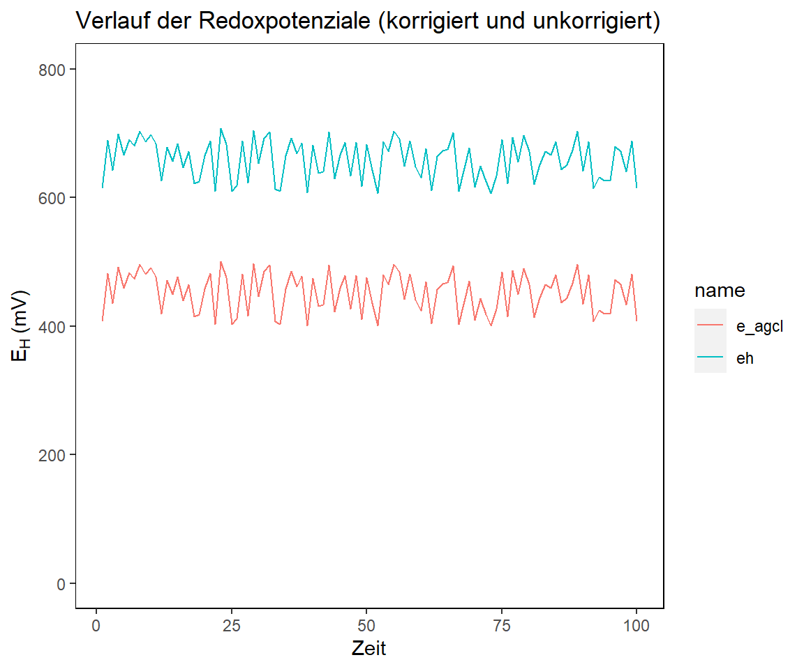

Es lassen sich mit Vektoren mathematische Operationen und zusammenfassende Statistiken durchführen. Im folgenden wollen wir Redoxpotenziale umrechnen, welche mit einer Silber-Silberchlorid Elektrode gemessen wurden. Für die Vergleichbarkeit und korrekte Nomenklatur sollten die Werte jedoch immer gegen die Standardwasserstoffelektrode (SHE) angegeben werden. Das Potenzial der SHE ist bei 25 °C um +207 mV größer, als das der Ag-AgCl Elektrode. Was müssen wir also tun? Wir müssen auf jeden Wert +207 mV addieren. Kein Problem in R:
# Ein Vektor mit gemessenen Redoxpotenzialen einer Ag-AgCl Elektrode
# Die Funktion `runif()` erzeugt Werte mit einer stetigen Gleichverteilung zwischen min() und max()
e_agcl <- runif(n = 100, min = 400, max = 500)
# Addition von +207 mV auf jeden Wert des Vektors
eh <- e_agcl + 207
# Erstelle einen data frame aus den beiden Vektoren
df <- data.frame(e_agcl, eh)
df <- df %>%
mutate(n = seq(from = 1, to = nrow(df))) %>%
pivot_longer(cols = c("e_agcl", "eh"))
# Plotte die Darstellung
df %>%
ggplot(aes(n, value, color = name)) +
geom_line() +
labs(
title = "Verlauf der Redoxpotenziale (korrigiert und unkorrigiert)",
x = "Zeit",
y = expression(paste("E"[H], " (mV)"))
) +
coord_cartesian(ylim = c(0, 800)) +
my_theme
Wenn wir mathematische Berechnungen mit einem Skalar an einem Vektor durchführen (in unserem Fall +207 mV), dann führt R die Berechnung für jedes Element des Vektors durch. Es ist nicht nur Addition möglich, sondern auch Subtraktion, Multiplikation und Division. Selbst logarithmieren und entlogarithmieren etc. ist kein Problem.
Eine Zusammfassung der möglichen Operationen seht ihr unten:
| Funktion | Beispiel | Ergebnis |
|---|---|---|
sum(x), product(x) |
sum(1:10) |
55 |
min(x), max(x) |
min(1:10) |
1 |
mean(x), median(x) |
mean(1:10) |
5.5 |
sd(x), var(x), range(x) |
sd(1:10) |
3.0276504 |
quantile(x, probs) |
quantile(1:10, probs = .2) |
2.8 |
summary(x) |
summary(1:10) |
Min = 1.00. 1st Qu. = 3.25, Median = 5.50, Mean = 5.50, 3rd Qu. = 7.75, Max = 10.0 |
Lasst uns den Mittelwert und die Standardabweichung des Redoxpotentziales der Zeitreihe berechnen (wenn nicht explizit erwähnt beziehe ich mich immer auf den EH Wert in mV gemessen).
# Mittelwert
mean(eh)
## [1] 655.2411
# SD
sd(eh)
## [1] 28.64204Kein Problem mehr für uns 😎
Vektoren sind simple 1-dimensionale Objekte in R. Wir haben jedoch auch schon Objekte wie Matrix, dataframe oder Listen kennengelernt. Eine grundlegende Sache einer Matrix oder eines dataframe ist es, dass die Vektoren diesselbe Länge haben müssen! Dies lässt sich mit der Funktion length() überprüfen. Wie lang war nochmal unser eh Vektor?
length(eh)
## [1] 100Die length() Funktion ist nicht die einzige wichtige Funktion um mit Vektoren oder Daten im Allgemeinen zu arbeiten. Für eure Arbeit mit R sind folgende wichtig:
| Funktion | Beschreibung | Beispiel | Ergebnis |
|---|---|---|---|
round(x, digits) |
Runde Elemente in x zu digits Stellen |
round(c(2.231, 3.1415), digits = 1) |
2.2, 3.1 |
ceiling(x), floor(x) |
Runde Elemente in x Auf (oder ab) zur nächsten ganzen Zahl | ceiling(c(5.1, 7.9)) |
6, 8 |
x %% y |
Ganzzahlige Division (ie. x durch y) | 7 %% 3 |
1 |